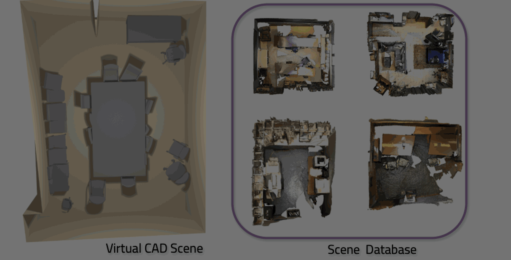

SGAligner++
Cross-Modal Language-Aided 3D Scene Graph Alignment
*Equal Contribution

TL;DR; SGAligner++ is a 3D Scene Graph alignment framework across modalities using open-vocabulary cues and learned joint embeddings.
Abstract
Aligning 3D scene graphs is a crucial initial step for several applications in robot navigation and embodied perception. Current methods in 3D scene graph alignment often rely on single-modality point cloud data and struggle with incomplete or noisy input. We introduce SGAligner++, a cross-modal, language-aided framework for 3D scene graph alignment. Our method addresses the challenge of aligning partially overlapping scene observations across heterogeneous modalities by learning a unified joint embedding space, enabling accurate alignment even under low-overlap conditions and sensor noise. By employing lightweight unimodal encoders and attention-based fusion, SGAligner++ enhances scene understanding for tasks such as visual localization, 3D reconstruction, and navigation, while ensuring scalability and minimal computational overhead. Extensive evaluations on real-world datasets demonstrate that SGAligner++ outperforms state-of-the-art methods in precision and cross-modal generalization.
Video
Method

Given two scenes s1 and s2, with spatially overlapping instances, and their multimodal scene graphs comprising:
- Structure: Denotes spatial location in the scene
- Point Cloud: Point cloud representation of an object instance
- CAD Mesh: Matching CAD model
- Caption: Text caption describing the object
- Referral: Open-vocabulary contextual spatial relationship between two instances
SGAligner++ employs specialized unimodal encoders: Struture Encoder, 3D Encoder, Caption Encoder, Referral Encoder, where they transform the diverse input modalities into a joint embeding space, where similar object instances are brought closer and dissimilar ones are pushed apart. This way it can match common instances across scenes, even if the scenes are represented in different modaltities (point cloud in one and CAD mesh in the other). From the matched instances, a unified scene graph combining information from both maps into a richer and more complete representation is constructed.
Qualitative Results
Given two scenes, we aim to retrieve the same object instances across them.
Each method is visualized in a separate block: the top row of each block shows the query object instances from scene 1 and the bottom row shows the corresponding object instances retrieved by that method.
Note: In our approach, all available modalities were used to retreive object instances. The objects shown in the images, marked with arrows (⟷) and numbers (1, 2, 3..), represent only a subset of common instances. The common objects in scene 1 are used as queries. Certain instances, marked with letters (A, B..), which may or may not be present in both scenes, illustrate cases where the method retrieves outside the current set of common object instances.
Citation
@misc{singh2025sgalignercrossmodallanguageaided3d,
title={SGAligner++: Cross-Modal Language-Aided 3D Scene Graph Alignment},
author={Binod Singh and Sayan Deb Sarkar and Iro Armeni},
year={2025},
eprint={2509.20401},
archivePrefix={arXiv},
primaryClass={cs.CV},
url={https://arxiv.org/abs/2509.20401},
}